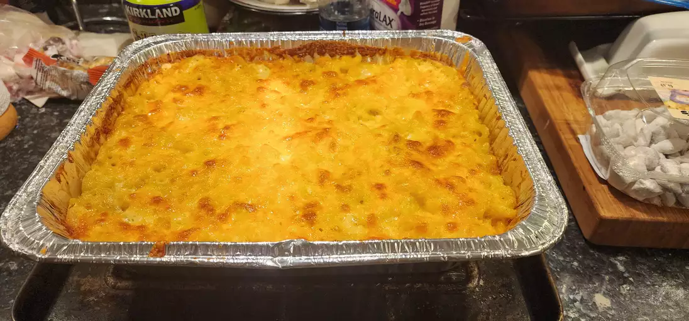

Cheesecake

Description
Skip the boxed stuff and make homemade mac and cheese tonight. This from-scratch macaroni and cheese recipe will become a staple in your dinner rotation.
Ingredients
Mac and Cheese
- 8 oz box uncooked macaroni/li>
- 1/4 cup salted butter
- 3 tbsp all-purpose flour
- 2 1/2 cups milk, more as needed
- 2 cups shredded sharp Cheddar cheese
- 1/2 cup finely grated Parmesan cheese
- salt and ground black pepper
Bread Crumb Topping
- 2 tbsp salted butter
- 1/2 cup dry bread crumbs
- 1 pinch ground paprika
Steps
- Step 1: Preheat the oven to 350 degrees F (175 degrees C). Grease an 8-inch square baking dish.
- Step 2: Make the macaroni and cheese: Bring a large pot of lightly salted water to a boil. Add macaroni and simmer, stirring occasionally, until tender yet firm to the bite, about 8 minutes; it will finish cooking in the oven. Drain and transfer to the prepared baking dish.
- Step 3: While the macaroni is cooking, melt 1/4 cup butter in a medium skillet over low heat. Whisk in flour and stir until the mixture becomes paste-like and light golden brown, 3 to 5 minutes.
- Step 4: Gradually whisk 2 1/2 cups milk into the flour mixture, and bring to a simmer. Stir in shredded Cheddar and finely grated Parmesan cheeses; season with salt and pepper. Cook and stir over low heat until cheese is melted and sauce has thickened, 3 to 5 minutes, adding up to 1/2 cup more milk if needed. Pour cheese sauce over macaroni and stir until well combined.
- Step 5: Make the bread crumb topping: Melt 2 tablespoons butter in a skillet over medium heat. Add bread crumbs; cook and stir until well coated and browned. Spread bread crumbs over macaroni and cheese, then sprinkle with paprika.
- Step 6: Bake in the preheated oven until topping is golden brown and macaroni and cheese is bubbling, about 30 minutes.